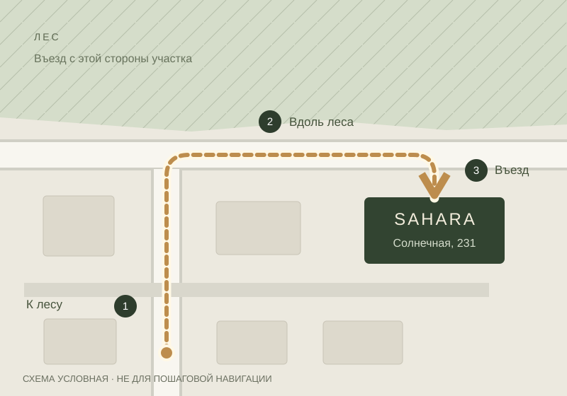

Как добраться
Въезд со стороны леса.
Навигатор может привести к участку с другой стороны — учитывайте это на последнем отрезке.
Навигатор может привести к участку с другой стороны — учитывайте это на последнем отрезке.

Предварительная схема. Линия условная; точные повороты уточним.
Солнечная улица, 231
СТ «Заценьский Родник», Папернянский сельсовет, Минский район.
53.978727, 27.501464
Схема показывает сторону въезда и не повторяет точную геометрию дорог. Пользуйтесь адресом и ссылками на карты; окончательный путь уточним после проверки на месте.